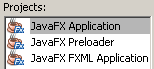
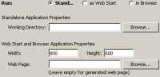

{kind=link}
JavaFXプロジェクト
IDEでJavaFXプロジェクトを作成できます。NetBeans IDEでは、次のタイプのJavaFXプロジェクトを作成できます。
- JavaFX FXMLアプリケーション。JavaFX FXMLアプリケーションでは、FXMLドキュメントを使用してグラフィック・レイアウトを定義し、Javaコントローラ・クラスを使用してアクションを定義します。NetBeans IDEはこのFXMLドキュメントとJavaコントローラ・クラスを作成します。IDEのJavaおよびXMLのコード編集機能を使用して、アプリケーションをさらに開発できます。
- JavaFXアプリケーション(FXMLなし)。NetBeans IDEでは、従来のJavaスタイルのJavaFXプロジェクトを作成することもでき、この場合、グラフィック・レイアウトとアクションの両方がJavaクラスで定義されます。
- JavaFXプレローダ。プレローダーはメイン・アプリケーションの前に起動し、起動操作をカスタマイズする小さなアプリケーションです。NetBeans IDEでは、JavaFXプレローダーを個別のプロジェクトとして作成するか、JavaFXアプリケーションの一部として作成できます。
- SwingアプリケーションでのJavaFX。NetBeans IDEによってJava SEアプリケーションの作成が簡素化され、ユーザーはJFXPanel Swingコンポーネントを使用してFXコンポーネントを埋め込むことができます。

JavaFXアプリケーションのビルドと実行
JavaFXアプリケーションのビルドおよび実行は、標準のJavaアプリケーションのビルドおよび実行と同様に行いますが、JavaFXプロジェクトは次の方法で実行するように構成できる点が異なります。
- スタンドアロン・アプリケーション。プロジェクトは標準のJavaデスクトップ・アプリケーションとしてビルドおよび実行されます。
- Java Web Start。アプリケーションはJNLPを使用します。IDEでは、アプリケーションをビルドするときにJNLPファイルが生成されます。
- ブラウザで。IDEは、JNLPファイルをコールするHTMLページを使用して、アプリケーションをブラウザに埋め込みます。IDEでこのHTMLページを生成するか、ユーザー独自のWebページを使用できます。IDEからアプリケーションを実行した場合、IDEはローカル・ファイル・システム上のHTMLページを指すブラウザ・ページを開きます。

JavaFXコードの編集
NetBeans IDEの強力なJavaコード・エディタを利用して、JavaFXアプリケーションをコーディングできます。
JavaFXのデバッグ
新しいGUIビジュアル・デバッガなど、NetBeans IDEのJavaデバッグ・ツールを使用して、JavaFXアプリケーションをデバッグできます。
 詳細は、NetBeans IDEでのビジュアル・デバッガの使用を参照してください。
詳細は、NetBeans IDEでのビジュアル・デバッガの使用を参照してください。
サンプル・プロジェクト
JavaFX 2.1とNetBeans IDEのサポートの機能を30を超えるJavaFX 2.1サンプル・プロジェクトで調べることができます。
 JavaFXドキュメント・ホーム: ダウンロード、デモ、FAQおよびチュートリアル。
JavaFXドキュメント・ホーム: ダウンロード、デモ、FAQおよびチュートリアル。